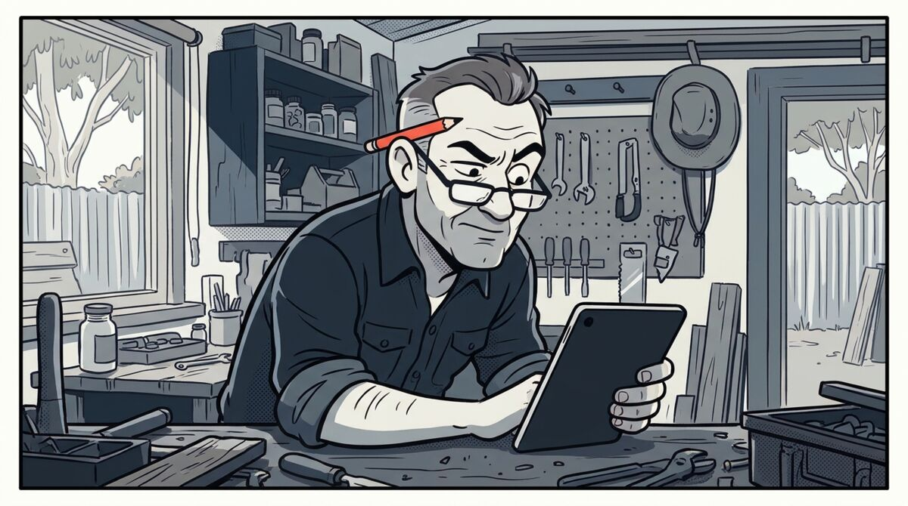
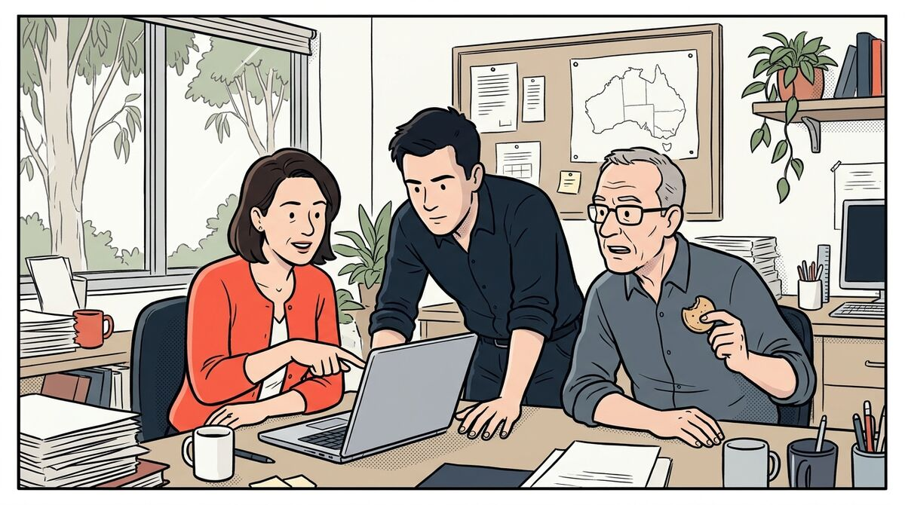

News
I went to the Brisbane AI Summit
I went to the Brisbane AI Summit this week. I'll be honest, I walked into City Hall with 1,300 other people expecting an afternoon of science I'd struggle to follow, nodding along while I quietly checked my emails.
It wasn't that. A mining CEO, a lending founder, a search specialist and one of Australia's best-known AI professors all landed in the same place, and it opened my eyes even further to what's happening right now. Most businesses still aren't using AI properly, and the ones that are, are pulling ahead.
The story that stuck with me most was about staff leave. One business owner asked an AI to go through two staff members' emails and work out how much leave they'd actually taken. It found 40 days nobody had recorded. All of it was in writing. None of it was in the books.
Your experience is worth more than the tool

AI is at its most powerful when it meets real expertise. That was the opening line of the day, and every speaker proved it.
Clayton Cross runs a mining exploration company, and he was the first to admit he's not an AI expert. He's failed thousands of times. But he showed AI some survey data and it spotted something his own team had walked straight past. His people knew enough to check it, and within days it had turned into a potential find.
My favourite story of the day came next. Clayton spends most of his life travelling, and while he was walking down the street somewhere, a stranger showed him a rock they'd picked up. He took a photo and asked AI what it was. It came back with about a 60% chance it was a meteorite. It's now being confirmed as one, worth somewhere around $40,000 to $50,000.
He knows nothing about meteorites. He didn't need to. He knew enough to ask the question, and that's the whole point.
One panellist put it plainly. If you're in your 30s, 40s or 50s with real experience, AI isn't as smart as you think. You'll spot when it's wrong, and you'll know what the right answer should look like. That's exactly why you'll get better results from it than someone half your age.
What this means for you: the people with 20 years in your business should be using AI the most. They're the quality control the tool doesn't have.
Waiting is a decision too

The line I hear most from business owners is "my customers like dealing with a person". Julian Fayad runs LoanOptions.ai, and he spent years as a finance broker before that, so he's heard it more than most. He doesn't buy it.
His view is that customers will happily give up the human connection if they get three things: speed, convenience and the right outcome. A person was just the fastest way to get those.
He proved it. His team tested an AI assistant that texted loan customers who hadn't sent their documents, told them up front it was an AI, then called to walk them through it. Customers were twice as likely to send their documents. Julian admitted he didn't think it would work. His margins have since gone from 49% to 64%, and he kept his brokers. The technology just made his best people faster.
Then he showed us what they've built since. A home loan application you can finish in about five minutes. You upload your licence, connect your bank account and upload a payslip, and it fills in the rest for you. One nurse started a loan application on her lunch break, and by the time her break was over the money was in her account. Thirty-six minutes, start to finish. Anyone who's been through a home loan knows how mad that sounds.
The panel's view was that big companies won't move quickly enough, and small ones can. One panellist put the return simply: work that took five days now takes one. The question is what you do with the other four.
What this means for you: someone in your industry is learning this right now, and their lead grows every month you wait.
Organised information is the head start
Clayton's closing point is the one I'd put on the wall. The first big AI job cuts are happening in banking, and it's not because banks are especially clever. It's because their information was already organised, so AI could get to work on it straight away. That's the head start big business has over small business right now.
He showed how he does it himself. His AI works like a specialist geologist, and he only lets it learn from three things: the textbooks he trusts, articles he agrees with, and everything about his own company. So when he asks it from his phone where to dig next, it answers from his information, not from whatever's floating around the internet. It's the same with the staff leave story. The answer was already sitting in the emails. Someone just had to point AI at it.
I'm seeing exactly this with a commercial furniture client of mine. Thousands of products from 16 different suppliers, all with prices, sizes and photos in different places and different formats. Most of the work we've done hasn't been the clever AI part. It's been getting that information clean and in one place, because nothing useful happens until it is.
What this means for you: before you worry about which AI tool to use, get your prices, processes, product details and common customer questions written down properly. Every tool gets better at once.
AI is about to do your customers' shopping
This was the talk that should keep business owners up at night, and hardly anyone in the room seemed to clock it.
Jack Baer helps businesses get found in AI search. His point was that the way people find a business has already changed. On Google, you type "best mechanic near me", get a list, and do the research yourself. With AI, you hand the whole job over. Jack's example: I've got a 2016 Camry with 200,000km on it, I want an independent mechanic because I'm not paying dealer rates, and I'm heading off on an alpine trip. Give me three options. AI goes away, reads the pages, compares them and comes back with its pick. That kind of "go and do it for me" request is now the most common thing people ask it.
The businesses it picks aren't always the big names. Jack searched for a phone plan on Google and got Telstra, Optus and Vodafone at the top. He asked AI the same question and not one of them made the list. It had looked at the plans, the support and the reviews, and the newer providers simply stacked up better.
Here's why it matters. AI reads roughly one page from each business it's considering. If your page answers the whole question and your competitor's doesn't, you get the recommendation. If it's the other way round, they do. Apple's technical spec page gets a fraction of the traffic of its glossy marketing page, but AI quotes it 18 times more often, because it's full of facts.
And it doesn't stop at recommending. Jack walked through where this is heading: from AI researching, to AI finding the product, to AI actually buying and booking on your customer's behalf. Some businesses are already getting bookings straight from ChatGPT. The same is happening in business buying. Someone working on a project describes exactly what they need, and AI goes and finds the supplier with the right product.
The customers who arrive this way are ready to buy. One of Jack's clients saw sales rise 36% after fixing their pages, and the AI visitors went straight to add to cart. They'd done all their research before they landed.
What this means for you: your website used to be a brochure for people. It's now a briefing for the AI that's shopping on their behalf. If your prices, products, services and the details customers ask about aren't written down clearly on the page, AI will recommend someone else.
Where to start
List every process in your business. Mark each one green if it runs fine, amber if it can wait, and red if it's a bottleneck. That was Julian's first step, and it needs no technical skill at all.
The businesses getting a return from AI didn't have the most tools. They'd built it around how they actually work, starting with the reds. Most find the reds aren't where they expected, and that's usually where the return is.